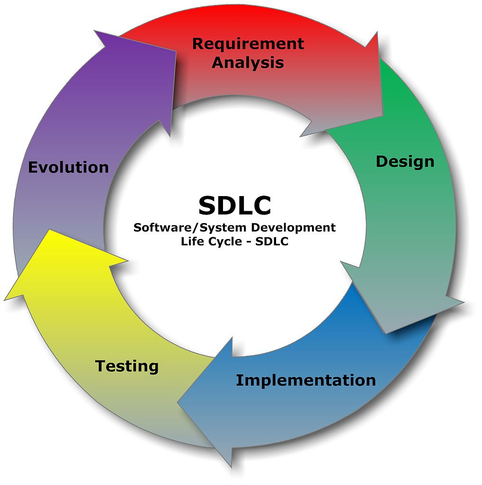

Quality Assurance is making sure the product you are testing is at its best quality and free of bugs.
Software testing is testing software programs for bugs and quality. The role of a software tester is to find bugs as early as possible and make sure they get fixed. Software testing follows the Software Development Life Cycle (SDLC).
